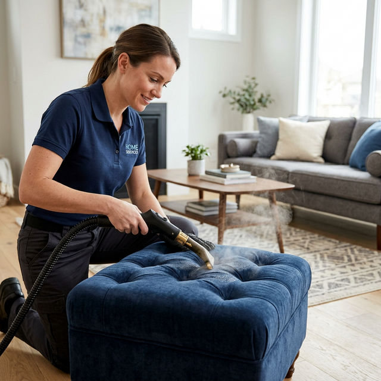

Professional Ottoman Cleaning Services in Melbourne
Ottomans are the Swiss army knife of furniture — they serve as footrests, extra seating, coffee tables, storage units, and even guest beds. This multi-purpose use means they cop more abuse than almost any other piece of furniture in your home. Shoes, bare feet, pet paws, food crumbs, drink rings, and spilled snacks all accumulate, leaving your ottoman stained, smelly, and harbouring hidden bacteria deep within the upholstery.
At BABA Cleaning, our professional ottoman cleaning Melbourne service goes far beyond surface wiping. We use Hot Water Extraction (HWE) steam technology to deeply penetrate the upholstery fibres, extracting ground-in dirt, neutralising trapped odours, and eliminating dust mites and allergens. Whether your ottoman is a tufted velvet showpiece, a flat-top linen footrest, or a leather storage cube — we restore it to pristine condition.


Our Ottoman Cleaning Process
Every ottoman receives our thorough multi-step cleaning treatment, customised to its style and material:
- Fabric & construction assessment — We identify whether your ottoman is tufted, flat, leather, or fabric and plan the best cleaning approach
- Detailed vacuuming — All surfaces, tufts, button indentations, and base crevices are vacuumed to remove crumbs, pet hair, and loose debris
- Stain spot treatment — Food, drink, shoe marks, and pet stains are pre-treated with targeted cleaning solutions
- Hot Water Extraction — High-temperature steam flushes out deeply embedded dirt, bacteria, and allergens that vacuuming misses
- Interior cleaning (storage ottomans) — We vacuum, wipe down, and sanitise the inside storage compartment for a complete clean
- Deodorising & fabric protection — Odour neutralisation plus an optional stain-resistant coating to keep your ottoman fresher, longer
Ottoman Styles We Clean
Whatever style of ottoman you own, our technicians have the tools and know-how to clean it thoroughly:
Tufted Ottomans
Specialised tools clean between buttons and tufts where crumbs and dirt love to hide.
Flat-Top Ottomans
Full-surface cleaning for ottomans that double as coffee tables and foot rests.
Storage Ottomans
Inside and out — lid, hinges, interior lining, and exterior fabric all cleaned.
Cube & Pouf Ottomans
Compact ottomans get all-around cleaning on every face and seam.
Round & Oval Ottomans
Curved surfaces and gathered fabric cleaned carefully to maintain shape.
Sleeper Ottomans
Fold-out bed area and seating surface both cleaned for complete freshness.
Ottoman Cleaning FAQ
Can you clean leather ottomans?
Yes! We use pH-balanced, leather-safe cleaning products and conditioning treatments that gently lift dirt and oils without drying, cracking, or discolouring the leather. Your ottoman will look supple and refreshed.
My ottoman has button tufting — can you still clean it properly?
Absolutely. Tufted ottomans are one of our specialties. We use narrow nozzles and specialised attachments to clean around and between each button and tuft, where crumbs, dust, and dirt love to accumulate.
Do you clean the inside of storage ottomans?
Yes! We vacuum the interior, wipe down the lining, and apply an anti-bacterial sanitiser. We'll also clean the underside of the lid. No hidden dirt left behind.
How long does ottoman cleaning take?
A single ottoman typically takes 15–30 minutes to clean. Due to their compact size, drying time is usually just 1–2 hours. You can use it the same day.
Can I get my ottoman cleaned along with my sofa or couch?
Absolutely — and you'll save money! We offer combo deals when you book multiple furniture items together. Sofa + ottoman, couch + ottoman, or a full living room package — contact us for a custom quote.
Give Your Ottoman the Clean It Deserves!
From tufted velvet to leather storage cubes, BABA Cleaning restores every ottoman in Melbourne. Call now for a free, no-obligation quote — or bundle with your sofa for a combo discount.